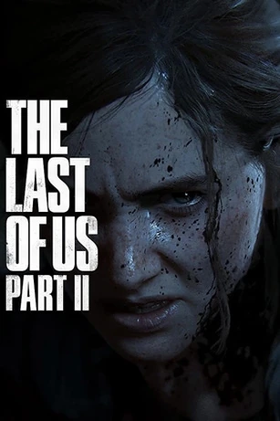

The Last of Us es un videojuego de terror, acción y aventura desarrollado por la compañía estadounidense Naughty Dog y distribuido por Sony Computer Entertainment para la consola PlayStation 3 en 2013. La trama describe las vivencias de Joel y Ellie, un par de supervivientes de una pandemia en Estados Unidos que provoca la mutación de los seres humanos en criaturas caníbales.
The Last of Us es un videojuego de terror, acción y aventura desarrollado por la compañía estadounidense Naughty Dog y distribuido por Sony Computer Entertainment para la consola PlayStation 3 en 2013. La trama describe las vivencias de Joel y Ellie, un par de supervivientes de una pandemia en Estados Unidos que provoca la mutación de los seres humanos en criaturas caníbales.
Según USA Today, en 2008 Neil Druckmann tuvo una idea para una novela gráfica sobre un cuento de zombies centrado en un padre y su hija. La idea del videojuego surgió cuando Él y el director Bruce Straley vieron un segmento de un documental de la BBC de la serie Planet Earth donde se mostraba a unas hormigas que eran infectadas por un hongo (el Cordyceps unilateralis) que las transformaban en unos zombis transportadores de esporas (algo así como semillas del hongo) y luego las mataba para que este pudiera crecer. Y es de ahí donde sacaron la inspiración para todo el juego. (En ese entonces estaban trabajando en Uncharted 2: Among Thieves)
También surgió de una serie de preguntas, la principal fue: "¿Qué pasaría si la naturaleza comenzara a reclamar lo suyo?". Según la revista Game Informer, el juego se basa en novelas como No es país para viejos o La carretera. Según la citada revista, el juego nos pondrá en el papel de Joel, un hombre que huye de la pandemia, y junto a él estará la pequeña Ellie, una niña criada en una instalación militar a salvo de la epidemia, ambos recorrerán Estados Unidos en busca de una solución. La acción se desarrolla en una postapocalíptica Pittsburgh, ciudad de Pensilvania, Estados Unidos.
El juego comenzó a dar sus primeras evidencias en un periódico del videojuego Uncharted 3: La traición de Drake (juego de la misma compañía), luego en afiches de la ciudad de Los Angeles sobre "Una exclusiva de PS3 que no podrás creer" (Publicidad de los Spike TV's Videogame Awards 2011), luego en 3 teaser trailers (2 diferentes, uno extendido) de su página oficial y una misteriosa cuenta de Youtube, y finalmente en la gala de los VGA. En la feria E3 de 2012 Sony Computer Entertainment confirmó que el juego no saldría en 2012. También en el E3 de 2012 mostraron un gameplay.
Durante los VGA 2012 se mostró el tráiler argumental del videojuego revelando al final del mismo que la fecha de lanzamiento se ha previsto para el 7 de Mayo de 2013. Respecto al apartado artístico del juego, Naughty Dog ha revelado, en el transcurso de los últimos meses del 2011, que el compositor argentino Gustavo Santaolalla se encargará de la Banda sonora y ambientación musical del Videojuego, ya que el director creativo y guionista de The Last of Us, Neil Druckmann, ha demostrado un sincero entusiasmo en el músico Rioplatense: "Es increíble" explicó Druckmann "Gustavo puede elegir dónde quiere trabajar; Podría trabajar en todas esas grandes películas, pero nos lo trajeron aquí, le mostramos el juego a través de su historia y lo que tratamos de hacer y me dijo que quería formar parte de esto".
Trailer The Last Of Us Parte I
 La historia de Left Behind sigue una línea de tiempo no lineal del tiempo de Ellie con Riley antes de conocer a Joel y las secuelas de la pelea con el grupo de David en la Universidad del Este de Colorado. Durante los eventos principales de The Last of Us, la escena comienza con Ellie escondiendo a Joel en una plaza abandonada de Colorado Mountain, usando su camisa de verano y algunas vendas para detener el sangrado del empalamiento de Joel mientras explora el centro comercial en busca de suministros médicos. Primero se encuentra con la farmacia de Weston, que ya ha sido limpiada de todos los suministros médicos. Sin embargo, ve un helicóptero militar derribado. Evitando a los infectados, se dirige al helicóptero, aprendiendo el destino de sus sobrevivientes en el camino y finalmente encuentra un botiquín.
La historia de Left Behind sigue una línea de tiempo no lineal del tiempo de Ellie con Riley antes de conocer a Joel y las secuelas de la pelea con el grupo de David en la Universidad del Este de Colorado. Durante los eventos principales de The Last of Us, la escena comienza con Ellie escondiendo a Joel en una plaza abandonada de Colorado Mountain, usando su camisa de verano y algunas vendas para detener el sangrado del empalamiento de Joel mientras explora el centro comercial en busca de suministros médicos. Primero se encuentra con la farmacia de Weston, que ya ha sido limpiada de todos los suministros médicos. Sin embargo, ve un helicóptero militar derribado. Evitando a los infectados, se dirige al helicóptero, aprendiendo el destino de sus sobrevivientes en el camino y finalmente encuentra un botiquín.
Ambientado tres semanas antes de que tenga lugar The Last of Us, Riley sorprende a Ellie en el internado. Al revelar que se convirtió en una luciérnaga durante su ausencia, Riley lleva a Ellie al centro comercial abandonado al que la llevó cuando se conocieron. Las dos niñas jugaron, con máscaras, lanzamiento de ladrillos y un carrusel. Sin embargo, Ellie sigue preguntando por qué Riley la trajo aquí. Riley evade la pregunta hasta que revela a regañadientes que las luciérnagas la asignaron a otro grupo en una ciudad diferente y que quería ver a Ellie por última vez a pesar de que Marlene le prohibió hacerlo. Para animarse, las chicas tuvieron una pelea de pistolas de agua y bailaron con música. Ellie le suplicó a Riley que no fuera a pesar de haberla animado antes. Riley deja caer su colgante en respuesta y Ellie la besa. Riley comienza a decir algo acerca de que Marlene no lo aprobará, pero los corredores atraídos por la música la interrumpen.
Volviendo a Colorado Mountain Plaza, Ellie intenta regresar con Joel con el botiquín médico. Sin embargo, se ve obstaculizada tanto por los infectados como por los sobrevivientes del grupo de David. Conociendo su debilidad en el combate cuerpo a cuerpo contra ambos grupos enemigos, Ellie usa su ingenio para iniciar una pelea entre los caníbales y los infectados, solo eliminando o evitando a los remanentes después. Ellie pronto llega al área donde escondió a Joel, pero tuvo que derrotar a los caníbales que intentaban abrir la cerradura. Aparentemente a salvo, también intenta entrar hasta que una ola de refuerzos la interrumpe. En una última posición, Ellie mata a los caníbales uno por uno, con la ayuda involuntaria de los infectados atraídos por los sonidos de la pelea. Una vez que finalmente está a salvo, Ellie regresa con Joel y trata su herida abierta.
En el pasado, Ellie y Riley intentan desesperadamente escapar de los corredores del centro comercial. Luchando contra ellos en el camino y haciendo varios desvíos, las chicas finalmente llegan al andamio para escapar. Sin embargo, Ellie se cayó del andamio y volvió al centro comercial. Las chicas se ayudaron mutuamente a luchar contra los corredores hasta que finalmente estuvieron a salvo. Aunque los corredores lograron morder a las dos chicas. Mientras Ellie arremete contra la infección, Riley la consuela un poco y le dice sus últimas palabras antes de que los dos abandonen el centro comercial. Sus palabras también estaban en lo profundo de la mente de Ellie mientras se prepara para salir de la plaza y llevar a Joel a otro escondite para el próximo invierno, lo que eventualmente conducirá a los eventos del capítulo de Lakeside Resort.
Trailer The Last Of Us Left Behind

Jackson, Wyoming. Año 2034. Joel le confiesa a su hermano Tommy que mató a Marlene y destruyó la base principal de las luciérnagas en Salt Lake City para evitar que mataran a Ellie para crear una vacuna contra el Cordyceps. Aunque sorprendido por la noticia, Tommy perdona a su hermano por la destrucción de su antiguo grupo. Esa noche, Joel visita a Ellie y le regala una guitarra, con la intención de consolidar su relación padre-hija sustituta y comenzar una nueva vida juntos.
Para marzo de 2038, Joel y Ellie todavía viven en relativa paz en Jackson como miembros de la comunidad. Ellie se levanta un día para patrullar. Su amigo Jesse habla sobre una fiesta la noche anterior en la que Ellie se beso con su ex novia Dina, un hombre las insulto y Joel la defendió pero Ellie se enojó con él. Al mismo tiempo, un grupo de sobrevivientes acampa en una mansión en las afueras de Jackson. Una mujer se levanta y habla con un hombre que le quiere mostrar algo. Luego de caminar logran ver Jackson a lo lejos y ambos hablan sobre un hombre al que buscan. Se revela que la mujer se llama Abby y el hombre se llama Owen. Owen le dice a Abby de retirarse ya que es demasiada gente y revela que su novia Mel está embarazada. Abby se enoja con él y Owen se va, lo que hace que ella se dirija sola hacia Jackson.
Ellie y Dina patrullan cuando una tormenta las obliga a resguardarse en una biblioteca. Allí dentro fuman marihuana que encontraron y luego se besan. Al mismo tiempo, Joel y Tommy salvan a una desconocida, Abby, de una horda de infectados. Para escapar de una tormenta de nieve, huyen a caballo al albergue Baldwin donde se aloja el grupo de Abby. Volvemos a Ellie y Dina. Ellie le muestra su mordida a Dina y le dice que se infectó cuando tenía 14 pero descubrió que es inmune. Dina no le cree y la golpea bromeando. Jesse aparece y les avisa que Joel y Tommy nunca volvieron. Los tres se dividen para buscarlos.
Joel, Tommy y Abby llegan a la mansión donde, debido al peligro de la tormenta, los amigos de Abby estaban esperándola. Una vez dentro, el grupo se revela contra Joel y Tommy, noqueando a Tommy y Abby procede a torturar a Joel. Minutos más tarde, Ellie llega al albergue solo para que Nick y Nora la sujeten y la hagan ver cómo Abby mata a Joel. Ellie jura matarlos a todos, luego la dejan inconsciente y se retiran. Jesse y Dina luego la rescatan a ella y a Tommy y devuelven el cuerpo de Joel a Jackson, donde está enterrado. Tommy tiene una charla con Ellie en la que dicen que Abby es parte de un grupo llamado Frente de Liberación de Washington, también conocidos como Lobos o WLF. Tommy no quiere ir ya que asegura que no es lo que Joel hubiera querido, pero al ver la insistencia de Ellie accede a hablarlo con Maria. Al día siguiente, Tommy se dirige a Seattle para cazar a Abby, y pide a Maria que detenga a Ellie pero ella se niega. Ellie y Dina lo siguen con la condición de traer a Tommy con vida.
En abril, la pareja llega a la ciudad y se abre camino a través del WLF, con Ellie matando a uno de los amigos de Abby, Jordan, y descubriendo que Tommy ya ha torturado y matado a Nick. Siguiendo el rastro de Tommy, también localizan a Leah, asesinada horas antes por un grupo misterioso, y saquean su cadáver para obtener información sobre Abby y sus amigos restantes. Poco después, el dúo escapa de una horda infectada, durante la cual Ellie se rompe la máscara. Una vez en un refugio en el desierto Teatro Pinnacle, Ellie revela que es inmune al cordyceps mientras que Dina revela que está embarazada. Descansan por la noche, durante la cual Ellie toca la guitarra y recuerda su decimoquinto cumpleaños con Joel. Ese día, ambos fueron al Museo de Ciencias e Historia de Wyoming, pero el día se arruina cuando Ellie ve un grafiti de Luciérnaga acompañado de la palabra "mentirosos". Ellie recuerda sus dudas sobre lo que pasó en el hospital.
Al día siguiente, Dina repara una vieja radio FEDRA y la usa para rastrear avistamientos por parte del WLF de un intruso en Hillcrest. Asumiendo que es Tommy, Ellie va allí para ayudarlo. Sin embargo, al llegar, encuentra a Jesse. La pareja se abre camino de regreso al teatro. Ellie se va a dormir la siesta y allí vuelve a soñar, esta vez con un día hace 2 años, en el cual fue a patrullar con Joel. Aquí su relación estaba un poco más tensa y cuando ven a una pareja que murió por infectarse, Ellie confronta por primera vez a Joel sobre lo ocurrido en el Hospital Saint Mary. Joel vuelve a mentirle pero esta vez Ellie no le cree. De vuelta al presente, Ellie hace que Jesse proteja a la débil Dina mientras ella sigue una pista de que Nora está en el Hospital Lakehill de Seattle. En el camino, Ellie se encuentra con los Serafitas un culto religioso que está en guerra con el WLF. Una vez en el hospital, Ellie acorrala a Nora en el sótano y la tortura para revelar el escondite de Abby en el acuario. Sin embargo, el incidente deja a Ellie traumatizada y arrepentida de lo que está haciendo para vengar a Joel. Ellie vuelve a soñar otra vez. Hace 2 años, luego de la anterior discusión con Joel, Ellie regreso sola al hospital y descubrió la verdad. Joel la siguió y cuando se encuentra con ella, Ellie lo obliga a confesar todo. Joel duda pero Ellie le dice que si vuelve a mentirle se irá y jamás volverá a verla, entonces confiesa. Ellie llora desconsoladamente y cuando Joel intenta abrazarla ella le grita que ni se le ocurra tocarla. Ellie le dice que regresará con él pero que su relación había terminado para siempre.
De vuelta al presente, a la mañana siguiente, Jesse convence a Ellie de que deben llevar a Tommy al teatro y dejar atrás Seattle, y le dice que no quiere arriesgar más la vida de Dina, que se ha enfermado. Ellie está de acuerdo, pero mientras busca a Tommy, Ellie se separa de Jesse para continuar su búsqueda de Abby. Llega al acuario, donde encuentra a dos amigos más de Abby; Owen y Mel. Ella intenta interrogarlos, pero es atacada, lo que lleva a una pelea que termina con Ellie matando a la pareja, lo que la lleva a colapsar por el estrés de sus acciones al enterarse de que la mujer estaba embarazada. Sin embargo, Tommy llega con Jesse, la pareja la convence de que se vaya con ellos, pero dejan su mapa atrás. Esa noche, el trío planea su ruta fuera de la ciudad, pero Abby los ataca en el teatro, habiéndolos rastreado. En un enfrentamiento, Jesse muere y Tommy es tomado como rehén. Ellie le ruega a Abby que deje vivir a Tommy a cambio de su vida. Abby, enfurecida porque Ellie y Tommy mataron a sus amigos, apunta su arma a Ellie.
Cuatro años antes, (Año 2034. 28 de abril) Abby está caminando por el bosque buscando a su padre, Jerry. Al encontrarlo, ella le dice que deben regresar a la base, pero él le dice que hay un animal que está por dar a luz y que primero debe ayudarlo. Minutos después, descubren que es una cebra y está atascada en un alambrado. Owen aparece y los ayuda, luego le dice a Jerry que todos lo están buscando pero él corre a asegurarse de que la cebra esté bien. Una vez seguros, Owen le habla a Jerry sobre una niña que encontraron, que tiene una mordisco viejo en el brazo sin rastro de infección y que por eso debe ir de inmediato con Marlene. Se revela que la base es el Hospital Saint Mary y Jerry es el cirujano que iba a operar a Ellie. Luego de realizar las pruebas, Jerry habla con Marlene. Le cuenta sobre el procedimiento que deberán hacer y pide permiso a Marlene para comenzar. Marlene duda pero, al ver que no lo hará cambiar de opinión, accede. Horas más tarde, las alarmas del hospital comienzan a sonar. Abby toma su pistola y se dirige a buscar a su padre, pero cuando entra a la sala de operaciones su padre había sido brutalmente asesinado por Joel. Abby comienza a gritar y Owen la consuela. Cuatro años después, Abby está torturando a Joel, Ellie le ruega que pare pero ella lo asesina. Manny se da vuelta y se dirige a asesinar a Ellie, pero es detenido por Owen, que sostiene que si los matan a ellos (Tommy y Ellie) no son mejores que Joel. Owen propone dejarlos con vida e irse ahora mismo. Abby accede y el grupo se retira.[5]
La historia ahora cambia de perspectiva, mostrando una analepsis de los mismos tres días que el espectador vivió con Ellie, esta vez desde la perspectiva de Abby.
El primer día, Abby lucha en primera línea con Manny Álvarez y Mel, a quienes les preocupa que las acciones de Abby en Jackson no hayan limpiado su conciencia como ella quería. Más tarde ese día, Abby y Manny visitan al líder de WLF, Isaac Dixon, en la base de operaciones avanzada (FOB), quien revela que quiere que la pareja lidere las fuerzas de WLF en un ataque total en la isla de los serafitas. Sin embargo, Abby se niega, después de haber escuchado de Nora que Owen ha sido condenado al ostracismo por la WLF por negarse a matar a un viejo serafita. Isaac no cede ya que en 2 días comenzarían un ataque a la isla serafita y Abby y Manny dirigirán el primer ataque. Abby desobedece y huye de la base para encontrar a Owen ya que según ella, sabe donde se esconde. 3 años antes, Abby y Owen tienen una cita en el acuario, luego de recorrer gran parte del lugar, llegan a los pisos inferiores, donde se encuentra un domo de cristal para ver el mar. Allí, una foca aparece y ambos quedan maravillados. Luego de besarse, Abby lo interrumpe para decirle que deberían irse a entrenar, ya que Abby está obsesionada con encontrar y asesinar a Joel. Owen, decepcionado, le dice a Abby que ella regrese y él se quedaría allí solo un rato más.
De vuelta al presente, Abby se escapa de la base para buscar a Owen. En el camino, una patrulla serafita le tiende una emboscada y la dejan inconsciente. 4 meses antes, Abby va al acuario para hablar con Owen. Se revela que ellos ya no son novios y Owen está en una relación con Mel. Owen le muestra los cambios que realizó al acuario y hace que Abby participe de un concurso de arquería. Luego, suben al piso de arriba donde Owen preparó una sala navideña para Mel. Ambos se sientan y Owen le invita de una cerveza artesanal que el mismo hizo, pero Abby lo interrumpe para contarle que un ex luciérnaga le dio información sobre el hermano de Joel. Le pide a Owen que la acompañe pero él duda, ya que es muy lejos y no saben si quera si Tommy sabría del paradero de Joel. Abby convence a Owen diciéndole que ya todos aceptaron, incluso Isaac. Owen acepta.
De vuelta al presente, los serafitas intentan sacrificar a Abby a su profeta. pero escapa con la ayuda de Lev y Yara, dos serafitas tildados de apóstatas y traidores. A pesar de que Yara se rompió el brazo en la fuga, Abby los deja en tráiler abandonada y les sugiere que se vayan por la mañana. Abby continúa sola y llega a su escondite privado en el acuario, donde encuentra a un Owen borracho que habla de su deseo de encontrar un campamento de Luciérnagas que se rumorea en Santa Bárbara. La pareja tiene una acalorada discusión que termina con ellos teniendo sexo.
Por la noche, Abby está plagada de pesadillas sobre la noche que murió su padre, pero esta vez ve en sus pesadillas a los dos niños que la rescataron, lo que la lleva a regresar al tráiler para salvarlos de los serafitas. Ella los lleva de regreso al acuario, donde han llegado Alice y Mel, también buscando a Owen. Abby le pide a Mel que evalúe el brazo de Yara y concluye que es necesario amputarlo. Abby lleva a Lev a la ciudad para recuperar suministros del Hospital Lakehill Seattle. En el camino, Lev cuenta a Abby que la razón por la que lo siguen es porque se afeitó la cabeza.
Después de pelear en un hotel lleno de infectados, la pareja llega al hospital. Abby entra, usando su rango para obtener acceso, pero pronto es detenida ya que Isaac ha dado una orden para capturarla. Nora ayuda a Abby a escapar y la lleva al sótano, donde aún se encuentran suministros. Abby recoge los suministros médicos después de matar al rey rata infectado que vive allí y sale del hospital con Lev. Esa noche, Mel opera a Yara, le quita el brazo y le salva la vida.
Esa noche, Abby no tuvo pesadillas, sino que sueña por primera vez en mucho tiempo, con su padre en vida, sonriendo. Por la mañana, Lev huye del acuario para volver con su madre en la isla Serafita. Yara, sabiendo que su madre matará a Lev por haber roto las tradiciones serafitas, convence a Abby de ir a la isla con ella para rescatarlo. Yara le cuenta a Abby que Lev es un chico trans y que por eso los serafitas lo quieren asesinar. Semanas antes, se le asignó un rol en la comunidad a Lev, él quería ser soldado como su hermana pero se le asignó que sería la esposa de un anciano y por este motivo el decidió revelarse e irse. En el camino, Abby se encuentra nuevamente con Manny en el puerto deportivo y lo ayuda a avanzar hacia un francotirador, que mató a su equipo. Acorralan al francotirador en un restaurante, solo para que el francotirador, los ataque por sorpresa. En la lucha, Manny muere de un disparo en la cabeza y casi logra matar a Abby, pero Yara la salva. Abby queda en shock ya que reconoce que el francotirador es Tommy y que probablemente la haya estado siguiendo. Abby y Yara continúan hacia la isla.
Llegan a la isla poco antes de que el WLF, liderado por Isaac, lance su invasión. Luchando a través de los serafitas, la pareja encuentra a Lev en la casa del hermano, quien mató a su madre en defensa propia. El grupo regresa sigilosamente a través de la isla pero se cruza con el equipo WLF de Isaac. Yara mata a Isaac y se sacrifica para que Lev y Abby puedan escapar. El dúo roba un caballo y atraviesa la batalla de WLF y los Serafitas en Haven. Roban un bote y huyen, dejando que las dos facciones se maten entre sí.
De vuelta en el acuario, Abby y Lev descubren que Alice, Mel y Owen han sido asesinados. Lev encuentra un mapa que revela la ubicación del asesino. Siguiéndolo, se dirigen al Teatro Pinnacle y entran por los niveles superiores. Abby baja sigilosamente las escaleras para encontrar a Tommy, de espaldas a ella, en el salón principal. Ella lo apunta con su arma y lo golpea en el suelo. Abby apunta con su arma a Ellie, pero Tommy interviene; Abby y Lev lo dominan y lo hieren. Ellie huye detrás del escenario, donde Abby la persigue. Se pelean, y la pelea termina con Abby derrotando con éxito a Ellie y Dina. Abby se prepara para matar a Dina, pero Lev la convence de que no lo haga. Abby deja a Ellie con vida y le advierte que no permita que las vuelva a ver.
Mucho tiempo después, Ellie y Dina regresaron a Jackson y ahora viven en una granja con el hijo de Dina y Jesse, JJ. Sin embargo, Ellie todavía sufre un trastorno de estrés postraumático provocado por la muerte de Joel y los eventos en Seattle. Un día, Tommy aparece de visita y le da una pista de que Abby y Lev se mudaron a Santa Bárbara. Más tarde, Ellie recuerda la noche en la que se besó por primera vez con Dina. Seth las insultó y Joel lo empujó para defenderlas pero Ellie se enojo y le gritó que no necesita de su ayuda. Joel, decepcionado, se retira. De vuelta al presente, Ellie empaca sus cosas y abandona su vida con Dina y JJ para cazar a Abby nuevamente.
En Santa Bárbara, Abby y Lev intentan encontrar a las luciérnagas. Localizan una estación de radio y se enteran de que el grupo se ha mudado a la isla Catalina. Sin embargo, mientras intentan alcanzarlo, un grupo de propietarios de esclavos conocido como los Víboras los captura y los tortura durante varias semanas, lo que culmina con el intento de la pareja de escapar pero fallando. Ellie llega a Santa Bárbara y encuentra la base de Víboras. Ella irrumpe, libera a los prisioneros y se entera por su líder que Abby y Lev han sido colgados en la playa para morir.
Ella los encuentra allí y los libera. Sabiendo que son débiles por los meses de tortura, Ellie estaba por retirarse pero es interrumpida por una visión de la cara sin vida de Joel. Amenaza con matar a Lev si Abby no lucha contra ella. Abby está de acuerdo. Luchan en el agua, con Abby mordiéndole los dedos a Ellie. Ellie finalmente atrapa a Abby bajo el agua, pero se niega a matarla después de tener una visión de Joel en vida, tocando su guitarra. Deja que Abby y Lev huyan en un bote a la isla Catalina mientras ella regresa a la granja.
En la granja, Ellie descubre que Dina y JJ se han ido. Encuentra su guitarra, pero no puede tocarla sin todos sus dedos. Piensa en el día anterior a la muerte de Joel en Jackson, cuando lo reprendió por defenderla de los comentarios homofóbicos de Seth en una fiesta. Esa noche, hablaron en el porche de Joel y la pareja decidió que intentarían reparar su relación. En el presente, Ellie deja la guitarra y se va de la granja.
Trailer The Last Of Us Parte II
The Last of Us es una serie de televisión de drama postapocalíptico estadounidense creada y escrita por Neil Druckmann y Craig Mazin para HBO. Basada en la saga de videojuegos del mismo nombre, desarrollado por Naughty Dog, la serie seguirá a Joel (Pedro Pascal), un contrabandista encargado de escoltar a Ellie (Bella Ramsey), una adolescente, a través de un Estados Unidos postapocalíptico, y el hermano menor de Joel y ex miliciano, Tommy (Gabriel Luna).
Una producción conjunta de Sony Pictures Television, PlayStation Productions, Naughty Dog, The Mighty Mint y Word Games, la serie se filmó entre julio de 2021 y junio de 2022 en Calgary, Alberta. La primera temporada adaptará los eventos de Parte I y debutará el 15 de enero de 2023. Algunos diálogos se eliminarán directamente, pero algunos episodios se "desviarán mucho" del juego. Constará de nueve episodios. Gustavo Santaolalla volvió a componer la partitura, retomando su papel del juego.
Un podcast complementario oficial presentado por Troy Baker se transmitirá junto con la serie. El 27 de enero de 2023 se anunció que HBO ha renovado la serie para una segunda temporada que adaptará los eventos de Parte II.
Trailer The Last Of Us Serie HBO
- Joel
- Ellie
- Tess
- Bill
Personajes The Last Of Us Left Behind
- Ellie
- Riley
Personajes The Last Of Us Parte II
- Joel
- Ellie
- Dina
- Abby
- Lev
- Tommy


- Infectado
- Acechador
- Chasqueador
- Tambaleante
- Gordinflon
- Rey Rata